4. Representing The World
The goal of many graphics applications is to simulate believable worlds. The first step in doing so is to decide how to represent real-world environments in a way that is efficient to store and compute with, and general to represent most real-world scenes.
4.1. Shapes
The first aspect in representing digital worlds is to decide how to encode the shape of objects. The main concern that arises when choosing a shape representation is the complexity and variety of real-world shapes. We want a representation that is suitable to modeling very different natural and man-made objects, like trees, buildings, cars, humans, etc. We want this representation to be efficient to store and compute with, capable of modeling small details, such as wrinkles on a face, as well as large environments, such as forests and cities.
When representing real-world environments, it is helpful to consider objects of different sizes and choose the simplest representation for each, as shown in Figure 4.7. We represent small particles, like dust and ember, as collections of points, since we can ignore the shape of individual particles. We represent thin strands, like hair and fur, as collections of curves, since we can ignore the cross-section of individual strands. We represent larger objects, like trees and buildings, as collections of surfaces, since we can often ignore the interior of individual objects. Ignoring the objects' interiors is mostly a practical consideration, since it is not visible in most cases, and it is significantly more efficient to store and manipulate the sole objects' surfaces. Finally, we represent gases and liquids with volumes, since they do not have a well-defined surface. In this book, we will mostly focus on points, curves and surfaces.
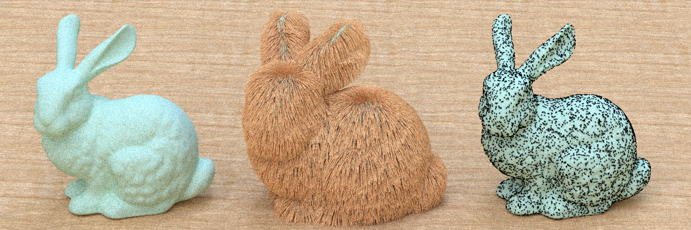
Figure 4.1. To reproduce real-world environments, we model objects' surfaces (left), thin strands (middle), small particles (right), and volumes (not shown here).
Points are zero-dimensional entities, so their geometric properties are described solely by their position, while curves and surfaces are more complex geometrically.
Curves are one-dimensional entities, and can be described as functions \(\mathbf{p}(u)\) that map a scalar parameter \(u\) to the position of all points on the curve, as shown in Figure 4.2. This representation is often called parametric or explicit. For simplicity, we can assume that the parameter \(u\) is defined in the unit interval \([0,1]\), and write points on a curve as a function
For example, points on a circle can be parametrized in polar coordinates with a fixed radius and a variable angle \(\theta \in [0,2\pi]\). Such angle can be written as \(2 \pi u\), where \(u\) is the parameter in the unit interval \(u \in [0,1]\). Using polar coordinates, points on a circle can be written as
Besides the positions of points on curves, illumination calculations depend on the curve tangent \(\mathbf{t}\). The tangent of a curve, shown in Figure 4.2, is the direction of the curve at a given point. The tangent's direction is parallel to the derivative of the curve function with respect to the parameter \(u\). We will define the tangent as the curve derivative written as
Figure 4.2. Parametric curve representation illustrating curve points and
tangents.
Surfaces are two-dimensional entities, and can be described as functions \(\mathbf{p}(\mathbf{u})\) that map a two-dimensional parameter \(\mathbf{u}\) to the position of all surface points, as shown in Figure 4.3. For simplicity, we can assume that the parameter \(\mathbf{u}\) is defined in the unit square \([0,1]^2\), and write points on a surface as a function
For example, points on a sphere can be written in spherical coordinates as
For surfaces, illumination calculations depend on a surface normal \(\mathbf{n}\) and its area \(a\). The normal of a surface, shown in Figure 4.3, is the direction orthogonal to the surface at a given point. It can also be interpreted as the direction orthogonal to a plane tangent to the surface at that point. All surface tangents lie on the tangent plane, and the normal is orthogonal to all of them. To compute the normal, we can first compute two tangents and then take their cross product. We consider the tangents of the curves obtained by fixing one of the two parameters \(u_1\) and \(u_2\) and varying the other. These are curves on the surface, and their tangents \(\mathbf{t}_1\) and \(\mathbf{t}_2\) can be computed as the partial derivatives of the surface function with respect to the parameters \(u_1\) and \(u_2\) as
The surface normal is proportional to the cross product of the two tangents as
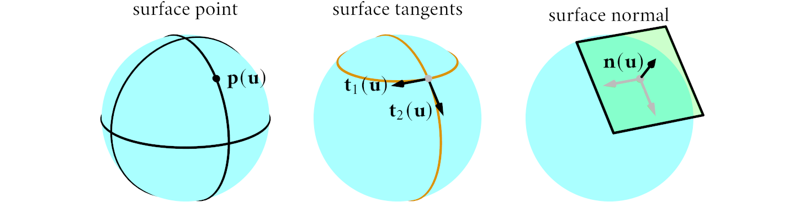
Figure 4.3. Parametric surface representation illustrating surface points, tangents and normals.
4.2. Shape Discretization
For arbitrary curves and surfaces, we cannot write a closed-form formula to compute their points. One possibility would be to have many representations, one for each object type. While that may be more efficient, it is certainly more complex to work with. We instead rely on discrete representations, just like we did for images.
We discretize curves as collections of adjacent line segments, as shown in Figure 4.4. This discretization is a piece-wise linear approximation of the curve. We use this representation for its simplicity and efficiency.
Figure 4.4. Approximation of a curve as a set of line segments.
We discretize surfaces as collections of adjacent polygons, as shown in as shown in Figure 4.5, without explicitly modeling the objects' interiors. We ignore the interiors for simplicity and efficiency. Since handling arbitrary polygons is still hard, most graphics algorithms focus on using only triangles. We use triangles since they have simple geometric properties that can be computed and manipulated with ease. Some algorithms also use quads, which are polygons with four vertices, used to better capture the symmetry of many real-world objects. In this book, we focus on triangles, since they are the most used primitive, and treat each quad as a pair of adjacent triangles.
Figure 4.5. Approximation of a surface as a set of polygons.
We should note here that, differently from images, there are many possible discretizations for the same number of lines, triangles and quads. This is due to the fact that the same number of primitives can be arranged in many different ways, and that the arrangement affects the resulting approximation. For example, we can approximate a sphere with quads drawn along parametric lines, as a geodesic dome of triangles, or as a cube whose vertices are projected onto the sphere surface, as shown in Figure 4.6.
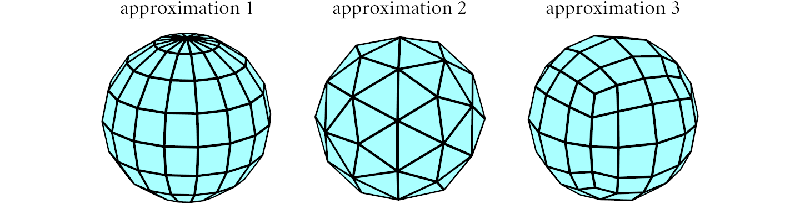
Figure 4.6. Different approximations of a sphere.
For the remainder of this chapter, we will consider discretized shapes that are collections of just four elements: points, lines, triangles and quads. The geometric properties of these shape elements depend only on their vertex positions, shown in Figure 4.7.
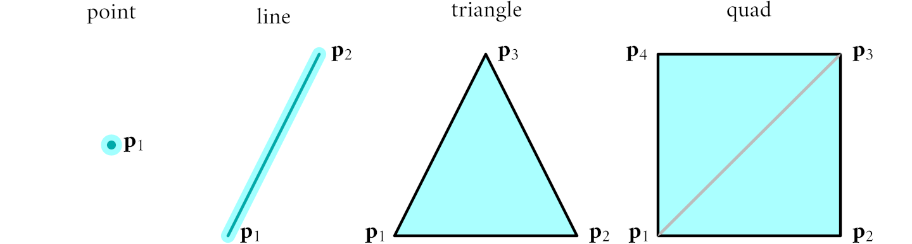
Figure 4.7. Shapes are discretized as collections of points, lines, triangles and quads.
Points are described by just their position. For rendering purposes, we assume that points have a small thickness, so that they are visible to the camera. The thickness though should be small enough that geometric operations can be approximated with just the position on the point.
Line segments are defined by the positions of the end points. As with points, we associate a thickness, for rendering purposes, that should be small enough that geometric operations can be approximated with the position of points on the line segment.
Points \(\mathbf{p}(u)\) on a line segment can be parametrized by a scalar \(u\) in \([0,1]\) that is zero at one end of the line and one at the other, as shown in Figure 4.8, and can be written as a weighted sum of the line end points \(\mathbf{p}_0\) and \(\mathbf{p}_1\) as
We can rewrite the equation above in terms of the point \(\mathbf{p}_0\) and the vector \(\mathbf{e}_1 = \mathbf{p}_1 - \mathbf{p}_0\), that connects the two end points and is tangent to the line segment, as
These two way of writing the line points are equivalent, but lead to different interpretations. The first is a weighted sum of the element vertices, while the latter can be interpreted as establishing a frame whose origin is the first line vertex and whose axis is the segment connecting the two vertices. We will see this duality for all element types.
Line tangents are the same for all points on the line, and can be computed as the normalized direction of the vector \(\mathbf{e}_{2,1}\), from one end point to the other, as
We will also need the length of the line segment, that can be computed as the norm of the vector \(\mathbf{e}_{2,1}\), as
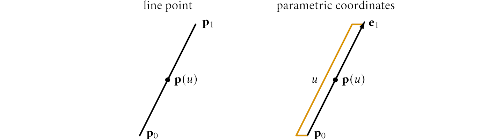
Figure 4.8. Line points written in terms of their parametric form.
Triangles are described by the positions of their three vertices, from which we can compute all triangle geometric quantities.
Triangle points \(\mathbf{p}(\mathbf{u})\), shown in Figure 4.9, can be parametrized by a two-dimensional vector \(\mathbf{u} \in [0,1]^2\), with \(u_1 + u_2 \leq 1\), and written as the weighted sum of the triangle vertices \(\mathbf{p}_0\), \(\mathbf{p}_1\) and \(\mathbf{p}_2\) as
The weights \(u_1\) and \(u_2\) are called barycentric coordinates. We can rewrite the equation above in terms of an affine frame whose origin is the point \(\mathbf{p}_0\) and whose axes are the vectors \(\mathbf{e}_1 = \mathbf{p}_1 - \mathbf{p}_0\) and \(\mathbf{e}_2 = \mathbf{p}_2 - \mathbf{p}_0\), that connect the first triangle vertex to the other two, as
These two equations are equivalent, and once again we have a duality between thinking about triangles points as weighted sums of the vertices, or as establishing a affine frame used to parametrize the triangle interior. Both interpretations are useful in different contexts, and we will use both in the remainder of the book.
Since the triangle is planar, all points on the triangle have the same normal, that can be computed as the normalized cross product of two triangle edges as
We will also need the triangle area, that can be computed as half the length of the cross product of two triangle edges as
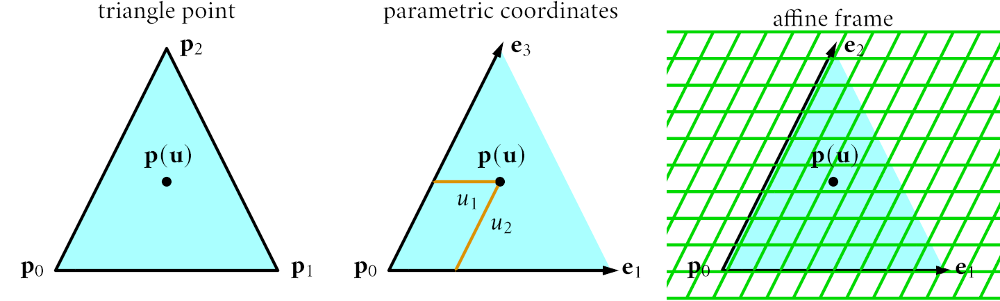
Figure 4.9. Triangle points written in terms of their barycentric coordinates.
Barycentric coordinates are a general formulation to linearly interpolate values over different element types. In fact, we can interpret the weights in the line equations as the barycentric coordinates of the point with respect to the line vertices. In general, barycentric coordinates are defined as the weights of a linear combination of points in a simplex, that is a generalization of triangles to higher dimensions: segments in one-dimensions, triangles in two-dimensions, tetrahedra in three-dimensions, etc. In terms of this general formulation, the barycentric coordinates of point with respect to a \(d\)-dimensional simplex are written as
In the case of triangles, barycentric coordinates have a geometric interpretation as the area of the triangle formed by the other two vertices and the given point relative to the area of the whole triangle, shown in Figure 4.10, and written as
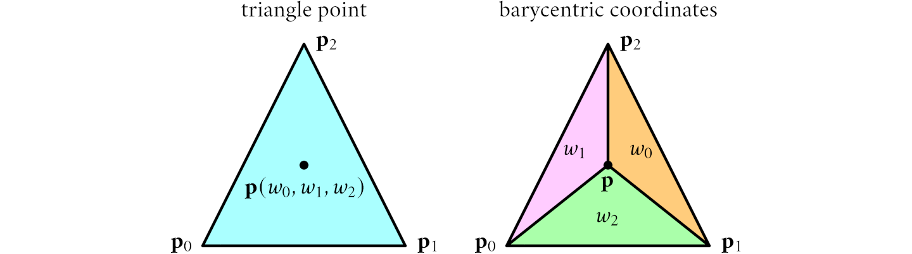
Figure 4.10. The barycentric coordinates with respect to a triangle vertex can be interpreted as the area of the triangle defined by the other two vertices and the given point relative to the area of the whole triangle.
Quads are described by the positions of their four vertices, from which we can compute all the quad geometric quantities. In this book, we use quads as convenience to better capture the symmetry of many real-world objects, and treat them as pairs of adjacent triangles. This is illustrated in Figure 4.11.
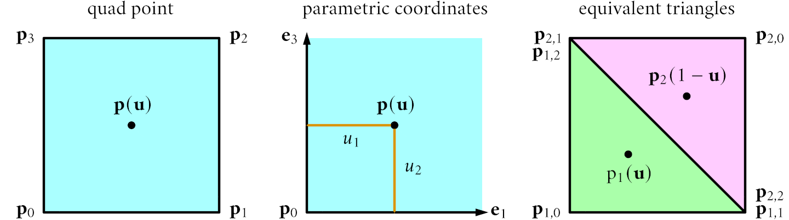
Figure 4.11. Quads treated as pairs of triangles.
4.3. Indexed Meshes
Curves are represented as collections of adjacent line segments, and surfaces as collections of adjacent polygons. If we were to store each element separately, the vertices shared by adjacent elements would be duplicated. To avoid duplicating shared vertices, we use an indexed mesh data structure. Each shape stores vertex properties in separate arrays, e.g. the array of vertex positions. We represent the shape elements as indices into the vertex arrays. In the following equations we will use the conventions that arrays are indexed from zero, since the programming languages commonly used for graphics adhere to this convention.
For curves, line segments are represented with two indices, one for each end point, shown in Figure 4.12. If we have \(n_v\) vertices and \(n_l\) segments, the shape can be represented as an array of \(n_v\) vertices \(\mathbf{p}_i\) and an array of \(n_l\) pairs of indices \(\mathbf{l}_j\) into the vertex array as
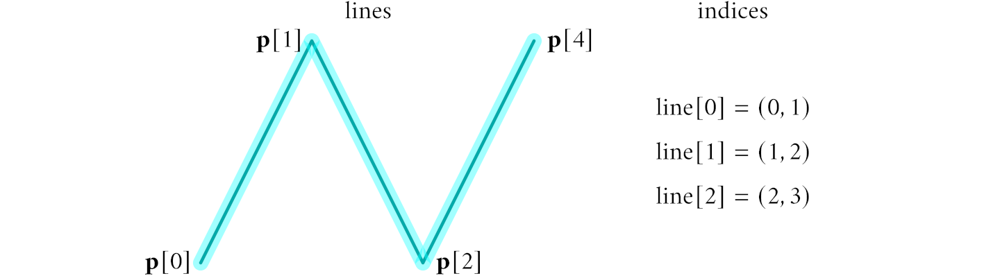
Figure 4.12. In an indexed data structure, lines are represented with two indicates that indicate the positions of the vertices in vertex arrays.
We can do the same for triangles, where we'll use three indices for each elements, as shown in Figure 4.13. If we have \(n_v\) vertices and \(n_t\) triangles, the triangle mesh can be written as an array of \(n_v\) vertices \(\mathbf{p}_i\) and an array of \(n_t\) triples of indices \(\mathbf{t}_j\) into the vertex array as
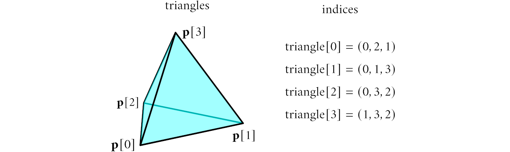
Figure 4.13. In an indexed mesh data structure, triangles are represented with three indices that indicate the positions of the vertices in vertex arrays.
Quad meshes are represented similarly, with four indices for each element, as shown in Figure 4.14. If we have \(n_v\) vertices and \(n_q\) quads, the quad mesh can be written as an array of \(n_v\) vertices \(\mathbf{p}_i\) and an array of \(n_q\) quadruples of indices \(\mathbf{q}_j\) into the vertex array as
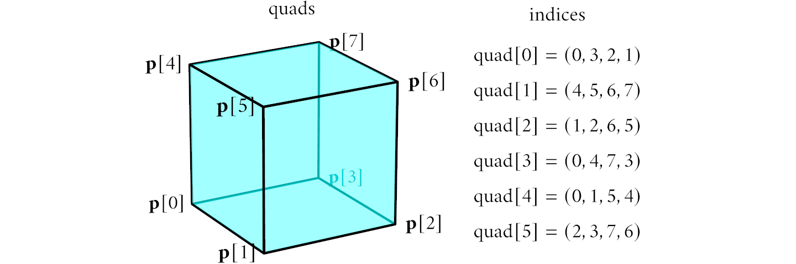
Figure 4.14. In an indexed mesh data structure, quads are represented with four indices that indicate the positions of the vertices in vertex arrays.
The indexed data structure has three main benefits. First, it allows us to save memory by removing vertex copies. Second, the data structure is trivial to implement, supported by GPUs, and very efficient on CPUs. Third, it explicitly represent the elements adjacency, meaning that to check whether two triangles share a vertex we can just check the vertex index, rather that having to verify whether the vertex location in one triangle, a floating point number, is "close enough" to the vertex location in the second.
4.4. Smooth Surface Approximation
Using lines and triangles to represent curves and surfaces is quite general and works well to render a large variety of real-world objects. It is important to realize thought that this is just an approximation of real-world shapes, rather than an exact representation. This is akin to how pixels approximate what we see though a camera viewfinder. The more pixels, the better the approximation gets. This is the same for lines and triangles, where the approximation gets better the more elements we use. In a way, we can think of the resolution of a shape as the distance between adjacent vertices. So if we want a one millimeter precision, our vertices should be no further apart than a millimeter.
We can quantify the approximation error in both positions and normals in a simple example. Consider the unit sphere of radius one centered at the origin and approximated with a mesh whose elements are aligned with the sphere's parametric lines. On the plane \(z=0\), the sphere is approximated with a regular polygon with \(n\) sides, as shown in Figure 4.15. The maximum error between the position of points on the sphere and points on the polygon mesh happens in the middle of each polygon side, and is given by the
Using the small angle approximation, we can write the error as
This means that the error decreases quadratically with the number of sides, making the approximation very effective.
The error in the orientation of the normals can be measured as the angle between the original surface normal and the face normal. The error is maximum at the vertices of the polygon, where we have different normals for the two adjacent faces, and is given by
In this case the error is significantly larger, and decreases only linearly with the number of sides.
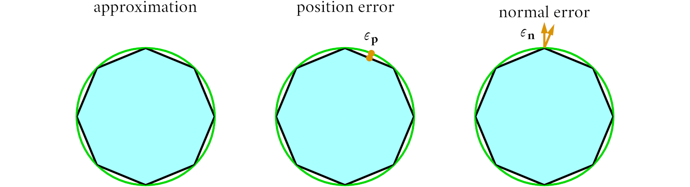
Figure 4.15. Approximation error of a sphere with \(n\) sides.
Since illumination computations depend on the surface normal, the approximation become most visible when handling smooth surfaces. The true surface normals vary smoothly for curved surfaces. Triangles are instead flat, and have the same normal for each point on the triangle. If we use the triangle normals directly, we obtain a faceted look. The approximation gets better as we increase the number of triangles, but the facets remain visible. To capture illumination variations faithfully, we would need in the order of one triangle for each pixel of the output images, so that each pixel has its own normal. But that would prohibitive in most cases.
A better alternative, shown in Figure 4.16, is to use an approximation of the normals of the original surface when computing illumination, instead of using the triangles' geometric normals. We can do this by storing the normals of the original surface at the triangle vertices and interpolate them inside the triangle. The interpolation is done using barycentric coordinates, that can be used to interpolate any quantity defined at triangle vertices, and can written as
The same idea can be applied to curves by storing the tangent of the original curve at the curve vertices and interpolating them on the line segment.
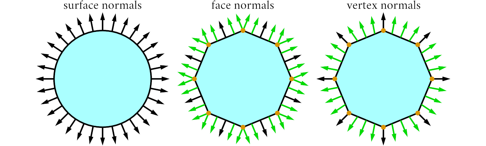
Figure 4.16. Comparison between smooth surface normals (left), triangle normals (middle), and interpolated vertex normals (right). When using triangle normals we have a faceted look since the same normal is used on all points of each triangle. Triangle edges are visible since two different normals are used to shade pixels near it. When using interpolated vertex normals, the surface has a smooth appearance since normals vary smoothly across the triangle interior and have no discontinuities at triangle edges.
Using vertex normals in rendering gives us a more realistic approximation of smooth surfaces, as shown in Figure 4.17. From the rendered image, we see how the faceted look remains visible even for small triangles, since face normals are just a piece-wise constant approximation of the true surface normals. Instead, using interpolated vertex normals gives a smoother appearance, since triangles with interpolated vertex values are a piece-wise linear approximation of a surface positions and normals. Values at vertices are interpolated using barycentric coordinates, that are in fact a general formulation to linearly interpolate any value over triangles.
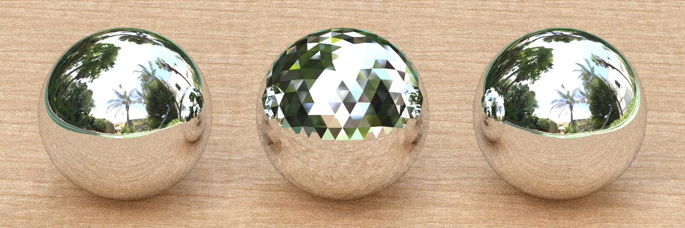
Figure 4.17. A sphere approximated with a low triangle count results in a faceted look when rendered using triangles normals (middle). Using interpolated vertex normals produces a smoother appearance, hence a better approximation of the original surface, for the same number of triangles (right), that is similar in appearance to using significantly more faceted triangles (left). Environment map and textures courtesy of PolyHaven.
4.5. Mesh Creation
For curves defined by closed-form equations, we can create a line mesh by sampling the curve function at regular intervals. Examples of meshes created this way are shown in Figure 4.18. More formally, for a curve defined by the function \(\mathbf{p}(u)\), we can create a mesh with \(n_l\) line segments and \(n_v = n_l + 1\) vertices by sampling the function at \(n_v\) values, written as
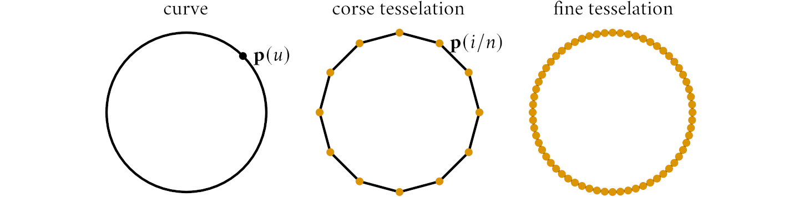
Figure 4.18. Meshes created by sampling a curve function at regular intervals.
Similarly, for surfaces defined by closed-form equations, we can create a quad mesh by sampling the function at a regular grid of samples. Examples of meshes created this way are shown in Figure 4.19. More specifically, for a surface defined by the function \(\mathbf{p}(\mathbf{u})\), we can create a mesh with \(n_q^2\) quads and \(n_v^2 = (n_q+1)^2\) vertices, by sampling the function at a grid of \(n_v \times n_v\) equally spaced values. Using a 2d array notation for clarity, we can write the resulting quad mesh as
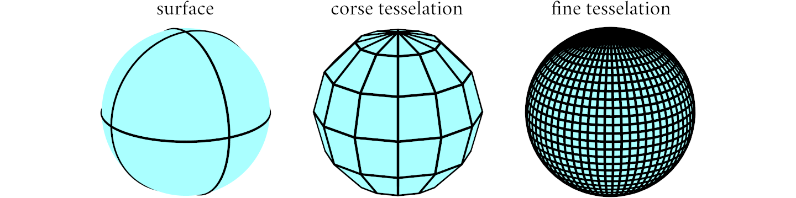
Figure 4.19. Meshes created by sampling a surface function at regular intervals.
In the equations written above we consider only the positions of the vertices. But any other vertex property can be computed and stored in the same way. For example, it is common to store vertex normals and tangents, and texture coordinates that we will see later.
It should be clear that this is just one possible way to create a mesh from a parametric curve or surface. We can create meshes in other manners, for example by adaptive sampling that places more samples where the function varies the most.
More importantly, most meshes in use in graphics are either modeled by hand in a polygonal modeling or sculpting software, or scanned from the real world using 3D scanning. For these meshes, we do not have a closed-form function to sample, nor we know how to analytically compute normals. For these, we approximate the vertex normals as the weighted average of the face normals computed over the faces that contain the vertex. We use face areas as weights to avoid that a few small faces skew the surface orientation. With this approach, we can compute approximate vertex normals for any mesh. Written formally, we compute the vertex normals \(\mathbf{n}_i\) as the weighted sum of the face normals \(\mathbf{n}^f_j\) of the faces \(\mathcal{F}_i\) that contain the vertex \(i\), weighted by the face areas \(a_j\), as
The simplest implementation of the previous equation is to loop over vertices and, for each of them, loop all faces to find the ones that contain the vertex. Once the containing faces are found, we compute the weighted average of their normals. This implementation results in a quadratic algorithm that is slow for even the simplest shapes. A more practical approach is to loop over the faces, compute their normals and areas, and accumulate these values in the normal array at each vertex index. This implementation is equivalent to the previous one but has linear complexity, thus drastically faster.
4.6. Surface Materials
Objects' appearance depend on the interaction between surface materials and scene illumination. When light interacts with a surface, it is either scattered in different directions or absorbed by the object. For opaque surfaces, light is scattered above the surface, and the directionality of the scattered light determines whether an object looks dull or shiny. For transparent surfaces, light is mostly scattered toward the object interior, making the objects see-through. In general, the proportion of absorbed and scattered light differs for each wavelength, making objects appear colored.
Just as for shapes, we seek a model that captures the appearance of most real-world surfaces. In the physical world, surfaces interact with lights in a variety of different manners. But to capture their appearance approximately, we need to model only a handful of surface-light interactions that reproduce the look of matte, glossy, reflective, transparent and translucent surfaces. We will discuss the difference between these materials, and their mathematical models, in the next chapters. Here we are only concerned with the data that is required to represent materials.
One possibility is to model materials using a tag to indicate the material type, the surface color and the surface roughness. The material type differentiate between different light scattering behaviors. The surface color is the main color of the object. The surface roughness controls the sharpness of reflections and transmissions, for example going from a mirror to a dull metal. Fig. 4.20 shows the same shape with different types of materials applied.
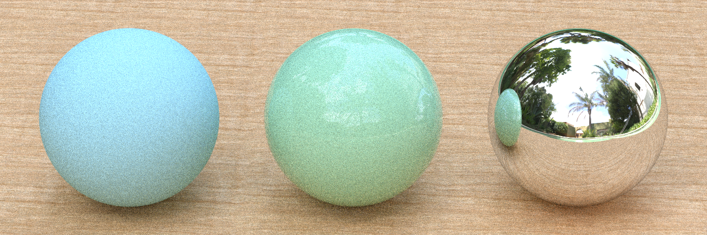
Figure 4.20. Surface materials differ in the manner in which they scatter light. Here we show a matte, glossy and metal surface.
In addition to reflecting light, surfaces may also emit it. Examples of these surfaces are the screen of a phone, the filament of a light bulb, etc. The simplest manner to model this behavior is to include an emission term to the material definition. Fig. 4.21 shows examples of emissive surfaces.
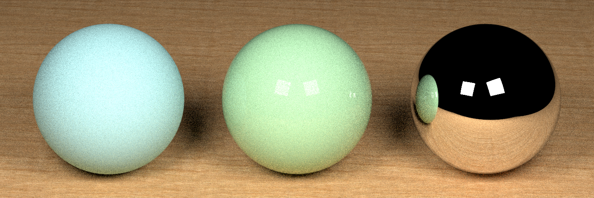
Figure 4.21. A scene lit by surfaces with emissive materials.
An advanced topic of this book is the rendering of translucent materials, where light scatters inside the objects' interiors. Examples of these materials are colored glass, jade, marble and human skin. In the real-world, describing the interior of objects made of these materials is remarkably complex. To mimic their appearance though, we can approximate the properties of the objects' interiors with just a constant color, that control the scattering of light in the objects' interior volumes. Fig. 4.22 shows examples of objects with volumetric effects.
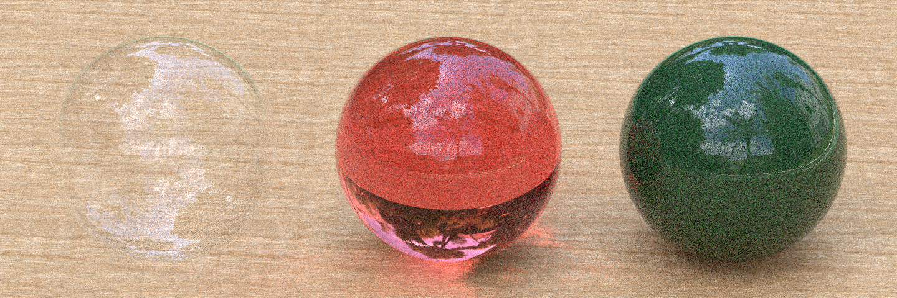
Figure 4.22. Transparent materials scatter light also inside the object volumes. Here we show a hollow glass ball, a filled glass ball that refracts and absorbs lights, and a jade ball that absorbs and scatters light inside its volume.
4.7. Texture Mapping
In the real world, material properties change on objects' surfaces. As examples, consider wood veins, floor tiles, printed clothes, etc. To model these variations, we could add vertex properties for each material parameter. But memory would grow quite rapidly this way. A more practical manner to model material variations is to use images and access image locations from the surface while rendering. In graphics these images are called textures. In practice, using textures decouples the resolution of the material variations from the geometric resolution, just like using vertex normals gives a smoother look even when using a small number of polygons.
To apply an image onto a surface we need to determine the image coordinates , called texture coordinates, that corresponds to each surface point. We can think of this assignment as defining a function \(\mathbf{s}(\mathbf{p})\) that maps surface points \(\mathbf{p}\) to image coordinates \(\mathbf{s}\). Texture coordinates are defined in the nominal range \(\mathbf{s} \in [0,1]^2\) to be independent of image resolution, and match the image parametrization we introduced earlier. We can write the mapping function as
As can be expected, there are several ways to define texture coordinates. For example, a sphere can be parametrized with spherical coordinates, or with by treating it as a cube mesh and using the cube parametrization. This is illustrated in Figure 4.23.
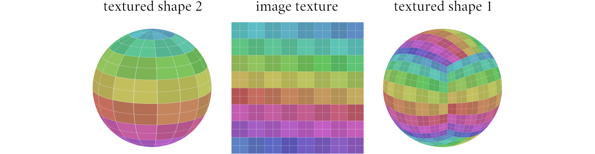
Figure 4.23. Different parametrizations of a spheres.
For parametric surfaces, specified by a function \(\mathbf{p}(\mathbf{u})\), it is common to define texture coordinates with respect to the parametric coordinates \(\mathbf{u}\) with a function \(\mathbf{s}(\mathbf{u})\) that maps between them.
For discretized surfaces, we can store texture coordinates at the vertices of the mesh, and interpolate them inside the triangles using barycentric interpolation. For a triangle with texture coordinates \(\mathbf{s}_1\), \(\mathbf{s}_2\) and \(\mathbf{s}_3\) at the vertices, we can compute the texture coordinates at any point \(\mathbf{p}(\mathbf{u})\) inside the triangle, illustrated in Figure 4.24, as
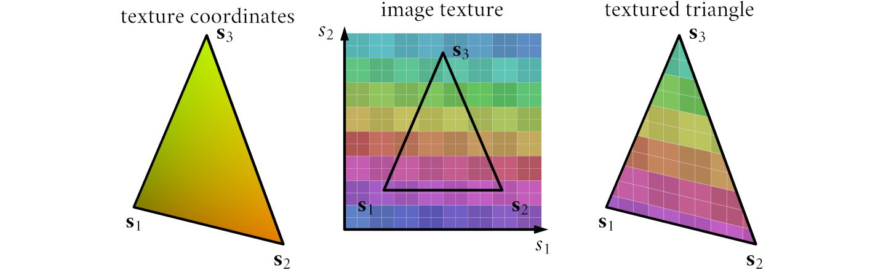
Figure 4.24. To apply an image to a triangle, we specify texture coordinates for each triangle vertex (left). These coordinates correspond to image locations in the normal range [0,1]x[0,1] (middle). During rendering, we lookup image values using texture coordinates interpolated with barycentric interpolation (right).
For a whole mesh, texture coordinates are generally authored manually in a 3D modeling software, and computed automatically either during editing or when scanning real-world objects. Figure 4.25 shows a textured mesh with its texture coordinates. We can interpret texture coordinates at mesh vertices as encoding a piece-wise linear approximation of a continuos texture mapping function defined over a continuous surface. Notice how once again we reach for the same discretization of functions over surfaces, just like we did for surface positions and normals.
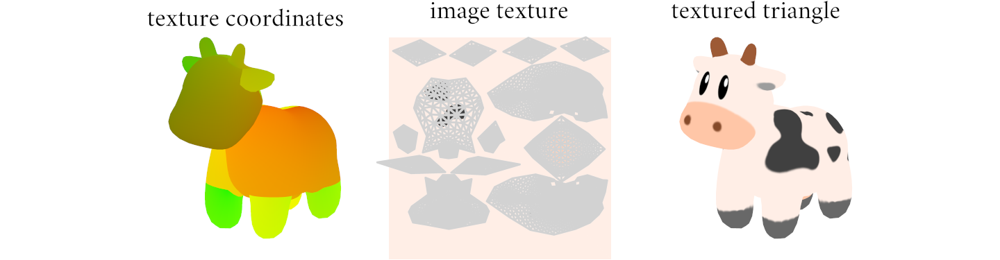
Figure 4.25. To apply an image to a mesh, we specify texture coordinates for each vertex (left). These coordinates correspond to image locations in the normal range [0,1]x[0,1] (middle). During rendering, we lookup image values using texture coordinates interpolated with barycentric interpolation (right). Model courtesy of Keenan Crane.
Textures can be used to vary any material parameter. For example, in Figure 4.26 we show how to alter surface color by applying a realistic texture on a simple surface.
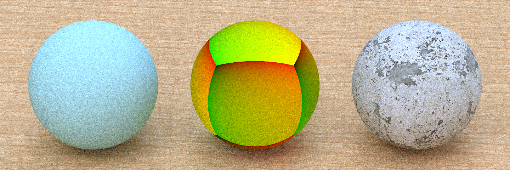
Figure 4.26. A simple object (left) with its associated texture coordinates, visualized in red and green (middle), is more realistic when we apply a texture that controls its color (right).
Textures can also be used to alter the surface geometry used to compute an image. This gives the appearance of a more detailed, rougher, geometry. Figure 4.27 illustrates the use of normal maps that control perturbations of the surface normals, and displacement maps where a surface is deformed along is normals guided by an image.
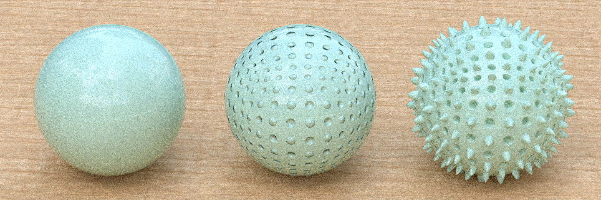
Figure 4.27. A smooth object (left) is made rougher by either applying a normal map that perturbs the surface normals (middle) or by applying a displacement map that alters both surface positions and normals (right).
By putting together several textures, often scanned from real-world objects, we can obtain very realistic materials that mimic real-world surfaces well, as shown in Figure 4.28.
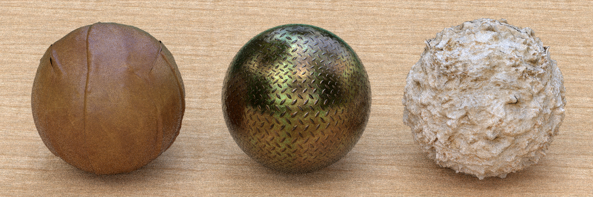
Figure 4.28. Examples of realistic materials: leather, metal, and rock. Environment map and textures courtesy of PolyHaven.
4.8. Materials Representation
From the previous discussions, we can see that materials can be represented by a collection of parameters, such as the material type, emission, color, roughness, etc., together with references to the corresponding textures. The most common case in graphics is to have most parameters textured, while only a few, like emission, remain constant over the surface. When both texture and constant parameters are specified, the constant value is either multiplied by the texture one or ignored, depending on the convention of the specific application. A sketch of a possible material representation could be written as
In the above sketch, texture images represent fundamentally different quantities. Emission textures encode radiance, so they should be represented with HDR images. Surface color and roughness have values in the \([0,1]\) range, so they are often represented with LDR images to save memory, provided that the texture values are converted to a linear color space before use.
4.9. Shape Instances
When modeling realistic environments, we need to be able to describe shapes precisely, while at the same time scale to large numbers of objects. The shape representation we discussed so far can be quite precise, but also not practical for very large scenes. For example, consider the case of a forest of thousands of trees, each of which with thousands of leaves. Representing all of this as collections of triangles would not be practical. A more practical approach is to represent only a handful of trees well, and then assemble a forest by placing copies of these trees. This is just an approximation, since in real life no two trees are the same, but for most graphics applications this works well, since the resulting environment is believable. This idea works well also when modeling cities, since buildings parts are often replicated, and since all cars of the same model are made to be identical. In fact, this also works for modeling crowds of humans, that are made believable by switching around face, body and cloths shapes and materials.
To take advantage of this basic idea, most graphics software use instances to place objects in the scene. An instance is described by a frame \(\mathbf{F}\), a shape reference \(s\), and a material reference \(m\). The instance frame defines the shape position and orientation in the scene by specifying a coordinate system that brings the shape's local coordinates into world coordinates. The use of shape and material references gives us scalability, since we do not have to copy the shape and material data, but simply refer to it. The use of instances is shown in Figure 4.29. We can write an instance succinctly as
Figure 4.29. A scene using instances. The small sphere is not copied but just
reused for all variations.
4.10. Digital Cameras
To render images we need to specify how the scene is viewed. There are several possibility, ranging from viewing models derived from technical drawing to modeling real-world cameras in all their details. Since in this book we focus on realistic rendering, we describe a model for virtual cameras that mimic real-world cameras, and is shown in Figure 4.30.
The camera position and orientation are defined by a frame that is centered at the lens location, with the \(y\) axis pointing up, the \(x\) axis pointing to the right side of the image and the \(z\) axis pointing toward the imaging surface, that is placed in the back of the camera. A useful way to setup a camera frame is to construct a frame to view a given point from the camera position.
The imaging surface, either film or sensor, is modeled as a rectangle placed on a plane that is perpendicular to the camera \(z\) axis. The size of the imaging surface is specified by its width and height in millimeters. For example, a "full frame" 35mm camera has a 36mm wide and 24mm high imaging surface. For convenience, it is often helpful to specify the imaging surface size as its width and aspect ratio, where the aspect ratio is the ratio of width versus height. For example, most TVs have a 16:9 aspect ratio, while most cameras for professional photography have a 4:3 aspect ratio.
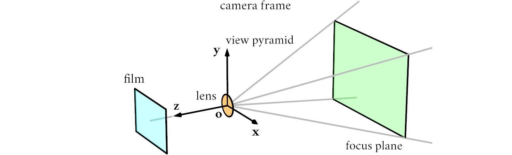
Figure 4.30. Camera model.
The imaging surface is placed at a small distance behind the lens, that is called the focal length of the lens. The focal length, together with the film size, determines the field of view of the camera, that is the angle of the scene that is visible through the lens, as shown in Figure 4.31 and in Figure 4.32. To model real camera, we generally fix the size of the imaging surface to a standard size, and specify the focal length of the lens.
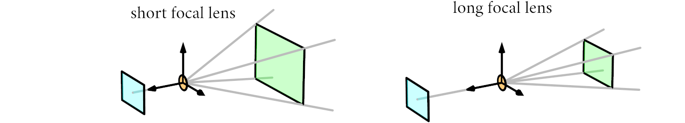
Figure 4.31. Changing the focal length changes the part of the scene that is viewed through the lens.
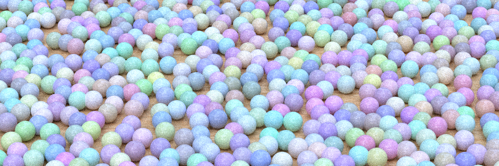
Figure 4.32. Scene rendered with a different focal length.
In real cameras, the lens system focuses the scene illumination onto the imaging surface. The lens system is comprised of many lenses to maximize the amount of light that reaches the imaging surface, while at the same time minimizing distortions. In this book, we will not model the lens system explicitly but use an equivalent formulation with simpler geometry. In this common representation, we specify the focal length directly, rather than computing it from the lens assembly, and approximately model the effect of the assembly as a lens with a given lens aperture focused at a specific focus distance. The lens aperture is the diameter of the lens opening, and determines the amount of light that reaches the imaging surface. The focus distance is the distance of the objects in focus, and determines the depth of field of the camera, that is the range of distances that are in focus. Figures 4.23 and 4.24 show the effect of changing the lens aperture and focus distance.
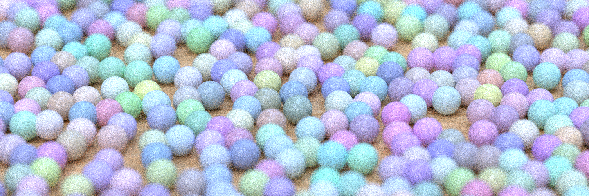
Figure 4.33. Scene rendered with an open aperture.
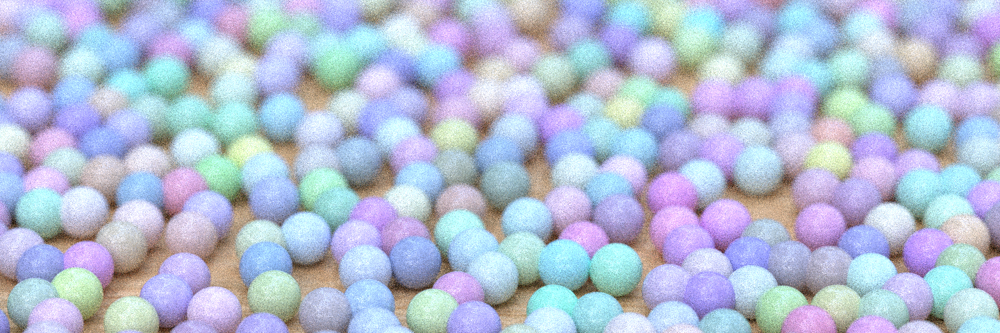
Figure 4.34. Scene rendered with a different focus distance.
Putting all together, we can model a camera with a frame \(\mathbf{F}\), to define position and orientation, an imaging surface of size \(\mathbf{s}\) placed at a distance \(l\) from a lens with aperture \(a\) focused at a focus distance \(f\). This representation is shown in Figure 4.35 and written succinctly as
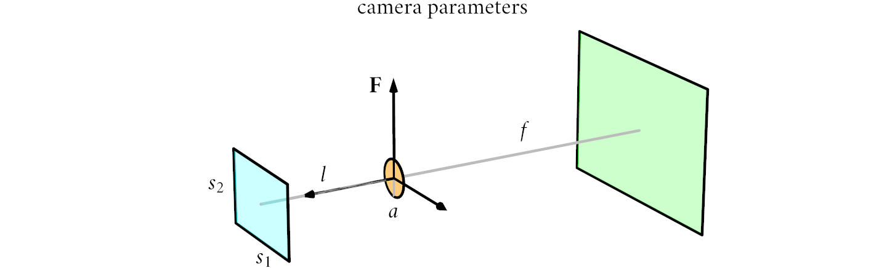
Figure 4.35. Parameters used to model a camera.
4.11. Environment Illumination
Outdoor scenes are mostly lit by sun and sky light and possibly the color of far away objects such as mountains. While we could model all these objects directly, the resulting scenes would be impractically large. The most practical solution is to use an HDR image, called environment map, to capture far way illumination, scaled by a color that allows to change the overall far away illumination, without changing the image. Each pixel in the HDR image encodes illumination for a specific direction. The environment map as a whole specifies all possible directions in a sphere of infinite radius around the scene. The orientation of the environment map with respect to the scene can be specified by a frame, that allows us to rotate the environment map to match the scene orientation. This model can be succinctly written as
Several parametrization may be used to map directions to environment map pixels. The simplest one is the latitude-longitude parameterization, where image coordinates correspond to the two angles in spherical coordinates, shown in Figure 4.36, where the orientation of the environment with respect to the scene is specified by a frame. Given a direction \(\mathbf{d}\), we can compute the corresponding texture coordinate \(\mathbf{s}\) as
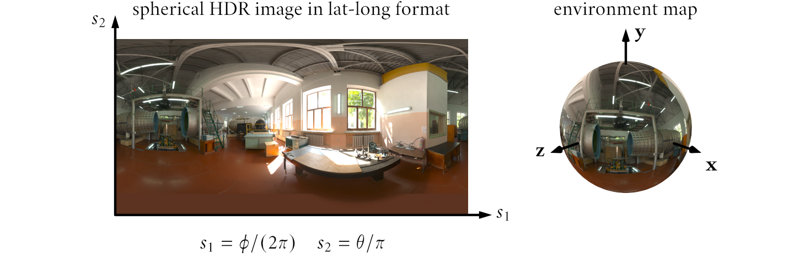
Figure 4.36. An environment map encoded in the latitude-longitude parametrization. Image coordinates correspond to spherical angles. Environment map courtesy of PolyHaven.
4.12. Approximations, approximations, approximations (*)
You may be asking why throughout the text we kept repeating the word approximation so many times. In the context of graphics, the word is very intentional as it underlies an aspect of computer graphics that is often lost in the discussions about mathematical foundations and numerical algorithms.
When it comes to taking about shapes, many introductory materials discuss mathematical properties of ideal shapes. This is certainly important, but realistic environments are composed of very irregular shapes, like the cracked bricks in old house. More importantly, today most 3d content is produced with digital sculpting or 3d scanning. Both these methods produce intricate but irregular shapes. Supporting these shapes well is the most aspect for practical graphics systems.
This aspect becomes even more pronounced in photorealistic rendering, where the algorithms we will review simulate the physics of lights to obtain realistic images. To use these algorithms, surface materials have to respect physical properties. As graphics matured, material descriptions have become more complex since experts derive them from physics. But these derivation have very specific assumptions that do not hold in most objects found in the real world. For practical applications, what matters the most is whether material definitions are well behaved numerically, and whether they approximate real-world surfaces well.
4.13. Rasterization (*)
So far, we have discussed how to represent shapes, materials, cameras and environments. We have not yet discussed how to render images from this description. In this section, we present the main ideas behind drawing shapes with rasterization. Rasterization is a simple rendering algorithm that is very efficient on GPUs, and is the basis for most real-time rendering approaches. While not capable of rendering realistic images, rasterization is still used in practice due to its speed. In the next chapter, we will discuss raytracing, the most common approach to rendering realistic images, which is one of the focus of this book. For the remainder of this chapter, we will present a sketch of a rasterization algorithm.
We will focus on rendering triangles since points and lines can be rendered with small or thin triangles respectively. We start by considering the problem of drawing two-dimensional triangles whose vertices are specified in image coordinates. The simplest algorithm to draw a 2d triangle is to loop over all pixels in the image and check whether the pixel center is inside the triangle. We can test whether a point is inside a triangle by computing the barycentric coordinates of the point with respect to the triangle vertices, for example using the area formulation for barycentric coordinates, and verifying that all barycentric coordinates are in the range \([0,1]\). We can speed up this algorithm by only looping over the pixels inside the 2d bounding box of the triangle. This algorithm is illustrated in Figure 4.37.
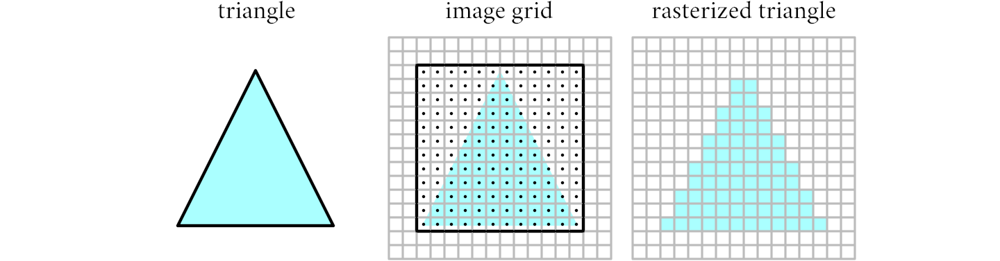
Figure 4.37. Rasterization of a single triangle.
In the case of multiple triangles, we can loop over all triangles and draw them one at a time. Points overlapped by multiple triangles receive the color of the last triangle drawn. This algorithm is illustrated in Figure 4.38.
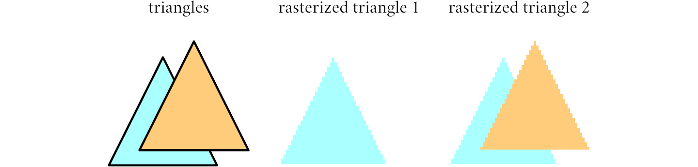
Figure 4.38. Rasterization of multiple triangles.
To draw a 3d triangle mesh, we need to project the mesh vertices from world coordinates to image coordinates, as illustrated in Figure 4.39. We can do this by first converting the mesh vertices from their world coordinates \(\mathbf{p}\) to their camera coordinates \(\mathbf{p}^c\), and then project the vertices to normalized coordinates \(\mathbf{p}^p \in [-1,1]^3\). The projection is done by dividing the \(x\) and \(y\) vertex coordinates by the \(z\) coordinate, and normalizing the coordinates by dividing them by the sensor size \(\mathbf{s}\). The \(z\) coordinate is also normalized by picking two distances \(n\) and \(f\) that define the near and far clipping planes, and mapping the \(z\) coordinate to the range \([-1,1]\) with respect to those planes. For a point \(\mathbf{p}\) in world coordinates, we can write the projected point as
Figure 4.39. Projection of triangles from world coordinates to image
coordinates.
To draw a 3d triangle mesh, we want to ensure that the color of the closest triangles appears on the image. In some cases, we can do so by sorting the triangles by their \(z\) coordinates and drawing them in back-to-front order. An image rendered with this algorithm is illustrated in Figure 4.40.
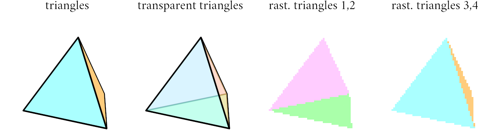
Figure 4.40. Rasterization of a triangle mesh rendered by sorting triangles from furthest to closest.
But in most cases, we cannot sort triangles since they may overlap in complex manners such that no sorting order is possible. This is shown in Figure 4.41.
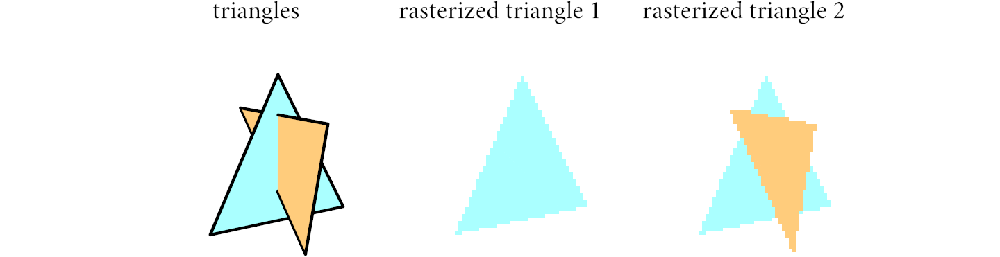
Figure 4.41. Overlapping triangles cannot be rendered by sorting.
We can address this issue by ensuring that the color of the closest triangle at each pixel is drawn by for example sorting triangles points per pixel rather then whole triangles globally. This algorithm is general but rarely implemented. A simpler solution is to keep a buffer of the closest distance rendered at each pixel, and only draw triangles points that are closer than the current buffer value. This algorithm is called z-buffer and is the most common rasterization algorithm in use today. The z-buffer algorithm is illustrated in Figure 4.42 and can be sketched as
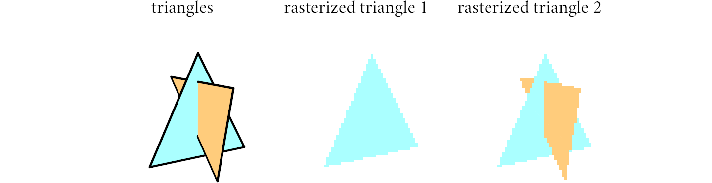
Figure 4.42. Images rendered with z-buffer for a configuration that cannot be drawn sorted.